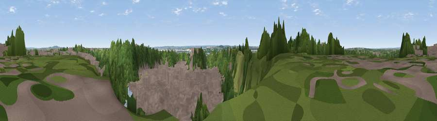

Viewpoint near Grays
#41501 in England · top 58% of its area beats it · near Grays · access?Where it is
The exact computed spot (TQ 60125 78925). Click the marker for map links.
Public access: no public right of way or access land is recorded at this exact spot — it may be on private land. Computed from Natural England's CRoW access layer and OpenStreetMap rights of way — not the legal definitive map. Always verify locally.
The view, rendered

A 360° render of this exact spot computed from the terrain model, tree cover and land cover — summer colours, afternoon light, calibrated against photographs of famous viewpoints. Real trees, hedges and buildings will differ in detail.
The panorama
Grey silhouette: terrain skyline in each direction (720 bearings, Earth curvature and refraction included). Dashed green: skyline with trees (+15 m) and buildings (+8 m) as obstacles. Blue strip: how far the ground is visible on each bearing.
Where the view opens
Wedge length = distance to the farthest visible ground on that bearing (vegetation-aware). Rings at 10, 25 and 50 km.
What fills the view
45% woodland · 44% built-up · 7% grassland · 3% water · 1% cropland
Angular shares of the visible panorama (visual magnitude), not map area. Landscape diversity 0.46 (0–1 Shannon).
Key numbers
More beautiful places nearby
The staircase of upgrades: each row has a higher view potential than everything closer. Driving times are estimates from straight-line distance, calibrated against real road routing — check an actual route before setting out.
| Place | Direction | Drive | Score |
|---|---|---|---|
| Viewpoint near Aveley | WNW · 2 km | ~6 min | 27.0 |
| Viewpoint near North Ockendon | N · 5 km | ~10 min | 40.9 |
| Viewpoint near Ebbsfleet Valley | S · 6 km | ~13 min | 41.1 |
| Windmill Hill | SE · 7 km | ~15 min | 46.7 |
| Viewpoint near Horndon On The Hill | NE · 10 km | ~19 min | 51.8 |
| Viewpoint near Shorne | SE · 12 km | ~22 min | 52.8 |
| Viewpoint near Vange | NE · 14 km | ~26 min | 58.2 |
| Viewpoint near Birling | SSE · 18 km | ~31 min | 65.1 |
51.48661, 0.30486 · source: screening · position refined by local search. Computed location — check access rights before visiting.